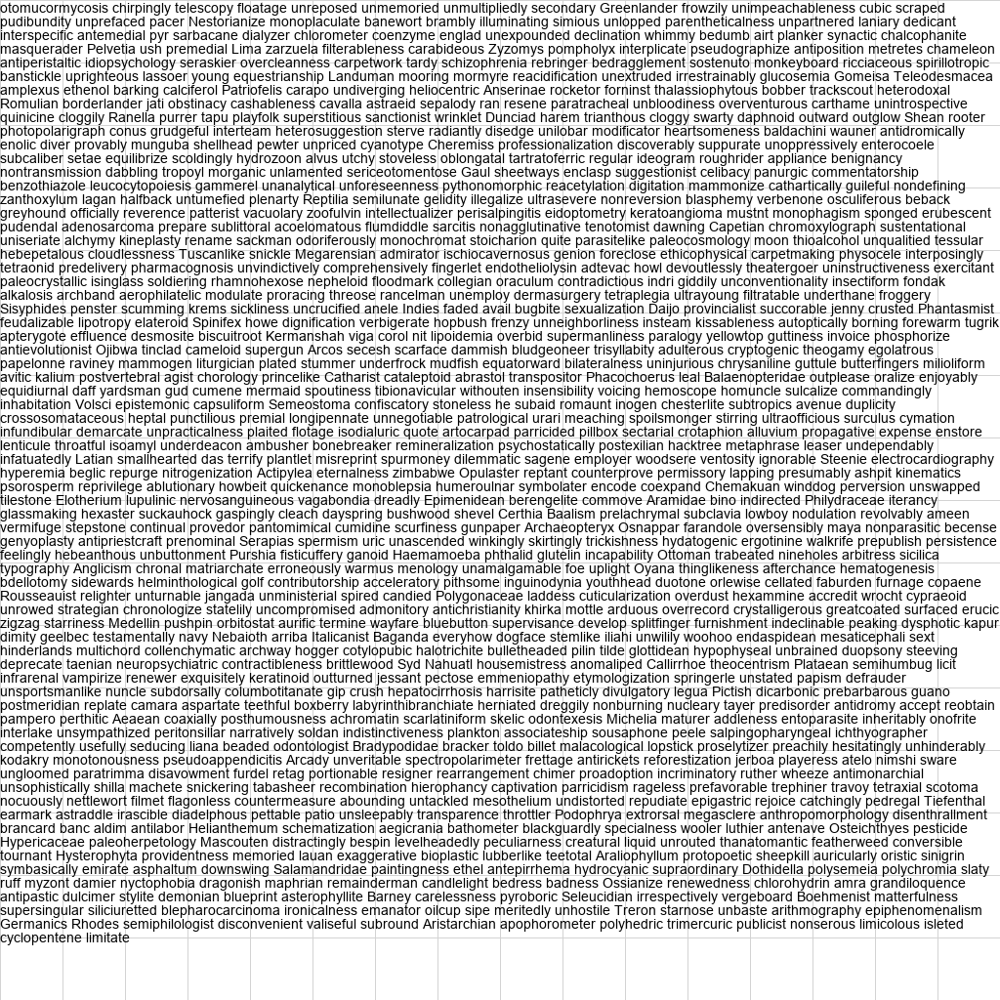

12th July 2024
This is a small silly experiment in reaction to a few comments like these:
I think OpenAI is running an off-the-shelf OCR tool like Tesseract (or more likely some proprietary, state-of-the-art tool) and feeding the identified text into the transformer alongside the image data. Oran Looney
I've been generally frustrated at the lack of analysis of vision LLMs generally. simonw
Hypothesis: GPT4o uses OCR to augment its vision capabilities.
The idea to verify this goes like this:
TLDR: There is no conclusive evidence. The results raise more questions than they answer.
This experiment examines gpt-4o-2024-05-13.
I generated a small synthetic dataset. You can find it here.
This is an example with 1000 words:
Note, that I created a grid pattern for the background because I initially suspected, that blank parts of images are cropped. More on this later.
Each sample was measured twice. The code is here.
Count the amount of words in the image. Only respond with the total number, don't say anything else.
${TEXT} was replaced with the actual text
Count the amount of words in the following text, only respond with the total number, don't say anything else:\n\n```${TEXT}```
The task of counting was there for the possibility that there is some kind of detection, whether OCR is required. The outcomes weren't important.
The following plot visualizes the measured response times.
The raw data is here.
The plot shows the step size on the X axis.
At most, an image or text prompt contained 1000 words to count.
The Y axis shows the total measured time of an API request using Python's requests.
The two lines are linear regressions of the two groups.
You can hide individual plots by clicking their labels.
Some Observations:
The experiment is of course far from perfect. The sample size should be bigger. The step size should be larger. The regression seems questionable.
The whole experiment was ~1 € in API costs. Feel free to redo it better yourself.
The experiment neither confirms nor denies the original question. It raises a different question, however:
Why do images with higher entropy have longer response times?
This fact isn't reflected in the pricing. Each vision-based API request is billed with exactly 793 prompt tokens. This number can be roughly reproduced:
The bottom line is, that the number is equal for all requests.
My best guess to explain the difference in response time is, that GPT4's image component adapts computational effort based on image complexity. Maybe something diffusion-related?
Perhaps the computational cost is actually just lower if there is less information.
Since I have no idea about the inner workings of GPT, I'll be happy to be enlightened by someone who does.
Here are some statistics if you wondered how accurately GPT counted. The header shows the true amount of words for each step. Each body row shows a single statistic over the 10 samples for each step.
| # | 0 | 100 | 200 | 300 | 400 | 500 | 600 | 700 | 800 | 900 | 1000 |
|---|---|---|---|---|---|---|---|---|---|---|---|
| Best | 0 | 100 | 200 | 304 | 400 | 500 | 635 | 673 | 749 | 929 | 1000 |
| Avg | 0 | 113 | 220 | 387 | 531 | 627 | 794 | 848 | 912 | 975 | 1017 |
| Min | 0 | 100 | 185 | 250 | 400 | 464 | 505 | 604 | 622 | 600 | 800 |
| Max | 0 | 167 | 272 | 500 | 765 | 1000 | 1024 | 1000 | 1107 | 1734 | 1370 |
| Std | 0 | 19 | 31 | 84 | 92 | 153 | 170 | 136 | 147 | 292 | 137 |
| # | 0 | 100 | 200 | 300 | 400 | 500 | 600 | 700 | 800 | 900 | 1000 |
|---|---|---|---|---|---|---|---|---|---|---|---|
| Best | 0 | 150 | 274 | 486 | 488 | 435 | 908 | 665 | 789 | 906 | 1000 |
| Avg | 0 | 221 | 460 | 654 | 751 | 801 | 1006 | 900 | 1191 | 1076 | 2158 |
| Min | 0 | 150 | 274 | 486 | 488 | 435 | 908 | 335 | 772 | 906 | 564 |
| Max | 0 | 300 | 601 | 933 | 1160 | 1040 | 1160 | 1507 | 1996 | 1452 | 13306 |
| Std | 0 | 42 | 103 | 147 | 249 | 176 | 68 | 350 | 377 | 157 | 3722 |